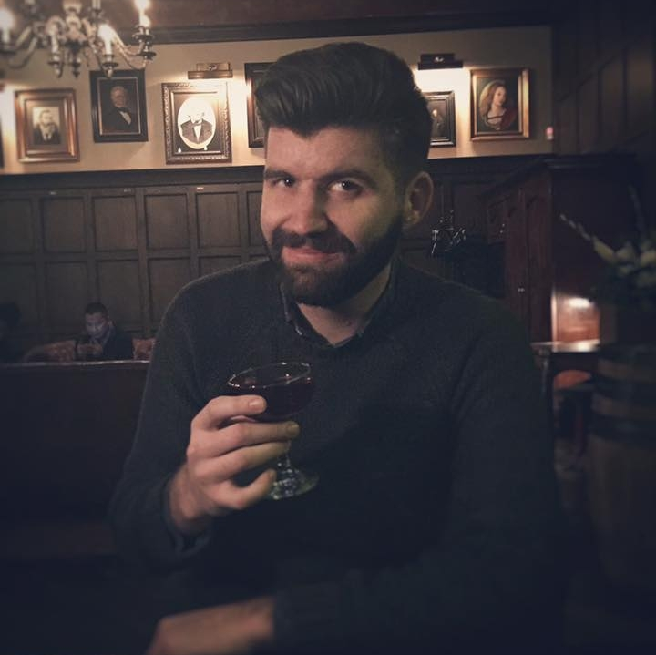

About Me
My name is Chris Erbstoesser. I was born and raised in Orange County. I went to Dana Hills for high school and Cal State Fullerton for College. There I studied Radio-Tv-Film Production.
I decided to attend the UCI Coding Bootcamp because I am looking for a career change. I feel that I have leveled off on my current career path and this course is the kick in the pants I need. I am excited to learn the fast moving and interesting world of Web Development.